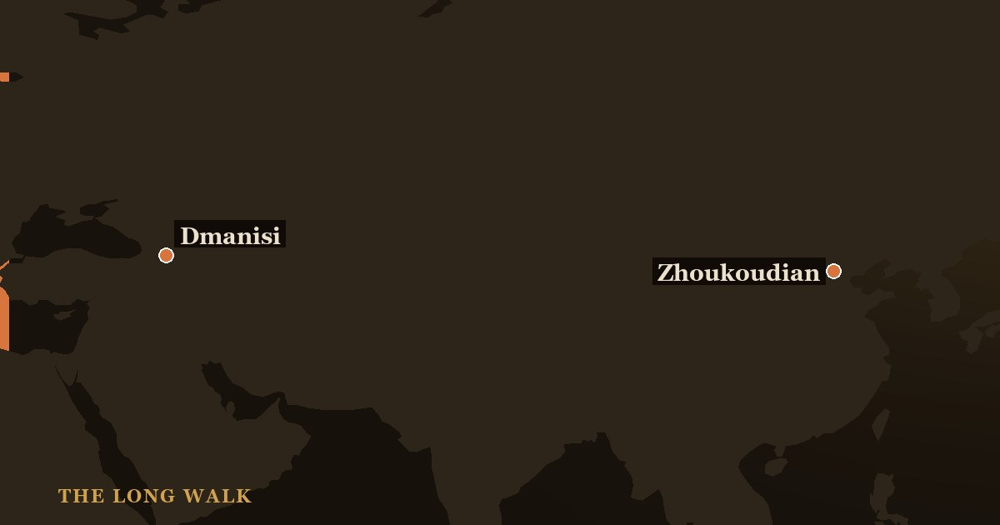

Dmanisi (Georgia, 1.8 Ma) documents the first hominins outside Africa—small-brained pioneers with simple Oldowan tools—while Zhoukoudian (China, 780–400 ka) shows established Homo erectus with larger brains, complex behavior, and long-term cave occupation. The contrast reveals how quickly the species adapted to new landscapes and climates across Eurasia.

Between 1.8 million and 400,000 years ago, Homo erectus transformed from an African species into a globe-trotting one. Two archaeological sites—separated by geography, time, and cultural sophistication—chronicle that epic transition. Dmanisi, in the Caucasus region of Georgia, marks the moment when our ancestors first stepped out of Africa. Zhoukoudian, near Beijing, reveals what Homo erectus became after hundreds of thousands of years in Eurasia.
These sites do more than fill gaps in the fossil record. They challenge old assumptions about human capability, brain size, and the pace of evolution. By comparing them, we see not a straight line of progress but a complex story of early ventures, dead ends, and eventual mastery.
| At a glance | Zhoukoudian (China) | Dmanisi (Georgia) |
|---|---|---|
| Age | ~780,000–400,000 years ago | ~1.8 million years ago |
| Location & Significance | East Asian settlement; Peking Man site | Caucasus gateway; earliest out-of-Africa site |
| Hominin Type | Homo erectus (established form) | Homo erectus (early form; H. erectus georgicus) |
| Brain Size | ~900–1100 cc (larger) | ~546–730 cc (much smaller) |
| Key Fossils | ~40 individuals (originals lost 1941) | 5 skulls, including D4500 (Skull 5) |
| Stone Tools & Behavior | Varied hand axes, cleavers; fire use (debated); long-term occupation | Simple Oldowan-style choppers; no fire evidence |
Dmanisi: The First Hominins Out of Africa
In 1999, excavators in the Republic of Georgia uncovered something revolutionary: a skull unlike any known from Africa, lying in volcanic sediment dated to 1.8 million years ago. This was Skull 1 from Dmanisi. Over the next decade, four more skulls emerged from the same red clay, culminating in 2013 with the description of Skull 5 (D4500), the most complete early Homo skull ever found. These individuals were small—averaging 1.45 to 1.66 meters tall and weighing perhaps 40 to 50 kilograms—and their brains were even smaller, ranging from 546 to 730 cubic centimeters, barely larger than a Homo habilis.
Yet they had traveled farther than any hominin before them. Dmanisi lies in the Caucasus Mountains, a vast geographical barrier between Africa and the rest of Eurasia. The fact that early Homo arrived here, with such modest brains and Stone Age toolkits, revolutionized our understanding of human dispersal. For decades, scientists assumed that only large-brained, sophisticated Homo erectus could survive outside Africa. Dmanisi proved otherwise.
The stone tools at Dmanisi are simple—mostly Oldowan choppers and flakes, the same design tradition that had served African Homo for half a million years. No fire hearths have been found. The environment was open grassland with wooded patches, colder than Africa but not yet ice-age harsh. Dmanisi's pioneers seem to have hunted medium-sized prey and scavenged larger kills. They made do with what worked in their homeland and carried it north.
Zhoukoudian: Peking Man and the Classic Homo erectus
Nearly a million years later and thousands of kilometers east, Homo erectus had changed. At Zhoukoudian, near Beijing, a deep limestone cave held layer upon layer of ash, bone, and stone—the compressed record of at least 400,000 years of occupation. The site was excavated primarily in the 1920s and 1930s by an international team, and it became the most famous Homo erectus locality in the world. The fossil hominin from Zhoukoudian was nicknamed "Peking Man," a name that stuck despite being replaced in scientific literature by the formal designation Homo erectus (or sometimes Homo erectus pekinensis).
Around 40 individuals are known from Zhoukoudian, represented by teeth, jaw fragments, and skull pieces. The individuals were larger and heavier than Dmanisi hominins, with brains ranging from 900 to 1,100 cubic centimeters—a 50 percent increase in volume over a million years. Their faces were more robust, their jaws stronger, their body proportions closer to modern humans. The archaeology shows sophistication: hand axes and cleavers far more refined than Oldowan tools, bone artifacts, and evidence of red ochre use, possibly for pigmentation or symbolic reasons.
The most debated question is fire. Dark layers at Zhoukoudian once seemed like hearths, but modern analysis suggests they may be natural deposits of burnt bone and soil, accumulated over many occupations rather than from intentional fire-making. Still, the site's long occupation, deep stratigraphy, and evidence for repeated cave use mark Zhoukoudian as a place where Homo erectus did not merely pass through but settled, returned to, and defended as home.
Key Differences: Brain, Tools, and Strategy
The contrast between Dmanisi and Zhoukoudian is stark. Dmanisi's hominins had brain volumes smaller than Homo sapiens newborns. Yet they colonized a new continent. Their tools were Oldowan, simple enough to be made by trial and error. They left no evidence of pigment, art, or complex social behavior. In short, they were refugees from Africa who succeeded by doing the minimum required to survive.
Zhoukoudian's Peking Man represents investment. Large brains capable of planning, learning, and innovation. Toolkit diversity: hand axes for butchery, choppers for bone, possibly specialized tools for hide-working. Pigment suggests aesthetic or symbolic thinking. Long-term settlement suggests stable social groups, territorial knowledge, and cultural transmission. These were not colonists but residents.
Yet both groups were Homo erectus. The comparison hints that the species was far more flexible than scientists once believed. Large brains were useful but not necessary for leaving Africa. Small-brained pioneers opened the gate; later, larger-brained populations reinforced the foothold.
The Significance: Two Chapters of One Migration
Viewed together, Dmanisi and Zhoukoudian tell a migration story in two acts. The first act is venture: poorly equipped but motivated hominins make a sudden, audacious leap out of Africa and into new ecosystems. The second is consolidation: their descendants evolve larger brains, better tools, and stable settlements, adapting to regional climates and resources. This is not the slow, gradual displacement textbooks once described but a rapid invasion followed by local elaboration.
Dmanisi shows us that the barrier between Africa and Eurasia was not as formidable as a map suggests. Ocean crossings required boats; deserts required planning. But the Isthmus of Sinai and the Caucasus were highways. A band of 20 or 30 hominins, following game or fleeing drought, could have crossed them in seasons. Once across, small-brained Homo erectus could exploit open savanna and woodland as easily as they had in Africa.
Zhoukoudian shows what happened next. With more time, larger brains, and accumulated cultural knowledge, Homo erectus became genuinely adapted to East Asia. The hand axes and cleavers of Zhoukoudian did not arrive from elsewhere; they were invented locally, reflecting the stone and prey available. The repeated occupation of the same cave site suggests memory, planning, and tradition. By 600,000 years ago, Homo erectus in China was as much at home as any species can be.
Why They Matter Today
These two sites are bookends to a revolution. They prove that human migration is not a modern phenomenon. For millions of years, our lineage has been restless, curious, and willing to hazard the unknown. Dmanisi and Zhoukoudian also challenge the myth of inevitable progress: Homo erectus did not need the brain of Homo sapiens to succeed, and settlement was not the result of one inspired innovation but of incremental, local adaptation.
The fossils themselves tell intimate stories. Skull 5 from Dmanisi shows evidence of healed trauma, suggesting the individual survived injury and was cared for by the group. Bones from Zhoukoudian bear cut marks from stone tools, evidence of deliberate processing of prey. Together, they remind us that behind every archaeological layer were families, individuals with lives and struggles, slowly perfecting the art of living in a wider world.
By comparing these sites, we see Homo erectus not as a fossil relic but as an ancestor engaged in the same basic human drives: exploration, adaptation, and community. The journey from Dmanisi's pioneers to Zhoukoudian's residents is the journey from courage to competence, a story still being written in our DNA.
See how Peking Man and the Dmanisi people trace Homo erectus across Eurasia on the migration map.
Explore the family tree →Frequently asked questions
What is the difference between Zhoukoudian and Dmanisi?
Dmanisi (Georgia, 1.8 Ma) documents the first hominins outside Africa—small-brained pioneers with simple Oldowan tools—while Zhoukoudian (China, 780–400 ka) shows established Homo erectus with larger brains, complex behavior, and long-term cave occupation.
- Lordkipanidze, D. et al. (2013). 'A complete skull from Dmanisi, Georgia, and the evolutionary biology of early Homo.' Science 342. science.org
- Shen, G. et al. (2009). 'Age of Zhoukoudian Homo erectus determined with 26Al/10Be burial dating.' Nature 458. nature.com
- Smithsonian Human Origins — Homo erectus. humanorigins.si.edu